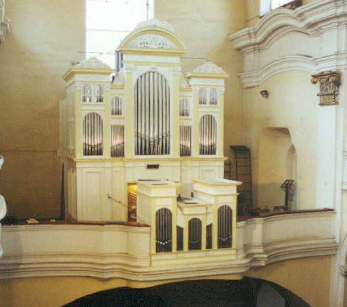
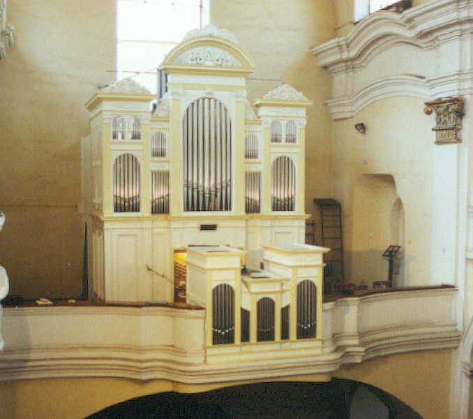
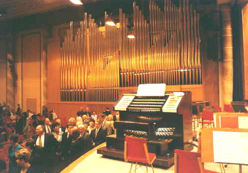
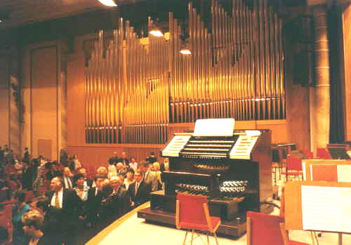

Hrací stůl je ta část varhan, odkud
varhaník nástroj ovládá. Slouží mu k tomu celá řada kláves, spínačů, páček,
tlačítek, sklopek a dalších zařízení. Hrací stůl může být přímo součástí
skříně nástroje (vestavěný v její dolní části, pak jej nazýváme „hrací
skříň) nebo stojí samostatně v jeho blízkosti. Elektrická traktura dnes
umožňuje i stavbu vzdáleného, pohyblivého stolu, ovládání nástroje z více
stolů nebo naopak ovládání více nástrojů z jednoho stolu. Součástí hracího
stolu jsou klaviatury (manuálové pro
ruce a pedál pro nohy hráče), registrační
zařízení a pomůcky pro ovládání rejstříků nástroje (sklopky, táhla,
rukojeti...) a pomocná zařízení pro rozšíření možností registrace, zjednodušení
obsluhy a zvýšení konfortu ovládání (crescendo, kolektivy, kombinace).
|
Ve starých, většinou menších varhanách se často setkáme s umístěním hracího stolu na boku skříně. Toto umístění značně zjednodušovalo konstrukci rejstříkové traktury (u varhan se zásuvkovou vzdušnicí), případně umožňovalo její celkové vypuštění (viz popis mechanické rejstříkové traktury). V tomto případě manubria, umístěná nad manuálem přímo ovládaly příslušnou zásuvku bez dalších elementů (pák, hřídelů…). |
| |
Hrací stůl může být situován i zpředu či zezadu varhanní skříně, může k ní být přistavěn nebo částečně či zcela zapuštěn ve výklenku (nice) jejího pláště. V tomto případě bývá často možné hrací stůl zvnějšku uzavřít. Na následující fotografii je hrací stůl v čele varhanní skříně: |

| A na těchto fotografiích v jejich výklenku (nice): |
   |
| Vlastní výklenek může být uzavírán pomocí žaluzií či dvířek, často ozdobných: |
  |
U varhan s pozitivem je hrací stůl jakoby uvnitř
nástroje (varhaník má část nástroje před sebou, část za sebou). Tyto části
mohou být od sebe poměrně daleko, často je však mezi nimi právě jen tolik
místa, aby se do něj vešla varhanní lavice: |
   |
 |
Hrací stůl může být oddělen od varhan zcela a vůči nástroji situován dle místní situace a potřeby (stojící čelně, zády, našikmo…). Umístění je většinou odvozeno od velikosti volného prostoru v místě, kde stojí nástroj, typu traktury (veškeré impulsy od hracího stolu je nutno převést nezkresleně a rychle do skříně nástroje, nejvíce omezení tak přináší mechanická traktura, o něco lépe je na tom pneumatika, prakticky bez omezení pak elektrická traktura) a potřeb varhaníka (v koncertní síni je lepší, má-li varhaník nástroj před sebou, má s ním tak lepší sluchovou vazbu, v kostele je zase obvyklejší uspořádání s nástrojem za zády, varhaník má přehled o dění v prostoru kostela před sebou). Na fotografii nalevo je příklad varhan se vzdáleným hracím stolem čelně k nástroji. |
| Běžné uspořádání nástroje z našich kostelů - nástroj za zády varhaníka: |
 |
 |
V případě mechanické traktury jsou abstrakty vedeny
pod podlážkou pod pedály, která je proti okolní podlaze mírně zvýšena.
Obdobně je tomu u pneumatické traktury (pod podlahou jsou rourky). Jak
vypadá takový stůl v řezu ukazuje následující nákres (varhany u sv. Klotildy
v Paříži, Aristide Cavaillé Coll, 1858): |
 |
| V koncertních síních stojí stůl, pokud není pohyblivý, většinou na boku pódia kolmo nebo šikmo k prospektu nástroje: |
   |
Velké nástroje, především koncertní, se často staví
s dvojicí stolů. První, většinou mechanický je součástí varhanní skříně,
druhý, téměř výhradně elektrický je buď pohyblivý (v koncertní síni je
jej možno umístit na pódiu pro orchestr v místě dle aktuální potřeby interpreta)
nebo stojí v jiném prostoru (např. v kostele dole, v prostoru lodi či
presbytáře): |
 |
V Boardwalk Hall (dříve Convention Hall) v Atlantic
City jsou největší světové varhany (zapsané v Guinessově knize rekordů
– 33 tisíc píšťal) s dvěmi hracími stoly. Pohyblivý – pětimanuálový, umístěný
ve foyeru budovy a hlavní – sedmimanuálový, situovaný v koncertní síni
ve speciální válcové „budce“. Více se o těchto varhanách dozvíte např.
zde: |
   |
Na dalších stránkách najdete klaviatury a registrační aparát. Součástí hracího stolu jsou i některá pomocná zařízení, jejichž popis je v samostatné kapitole. |
Poznámka: Tato stránka je součástí Anatomie varhan ®, © Ing. Petr Bernat. Všechny animace © Konrad Zacharski